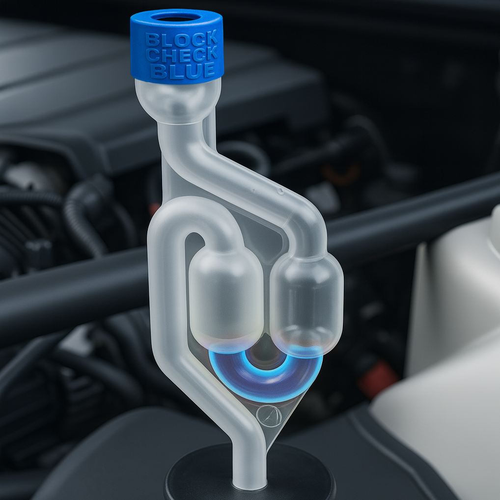
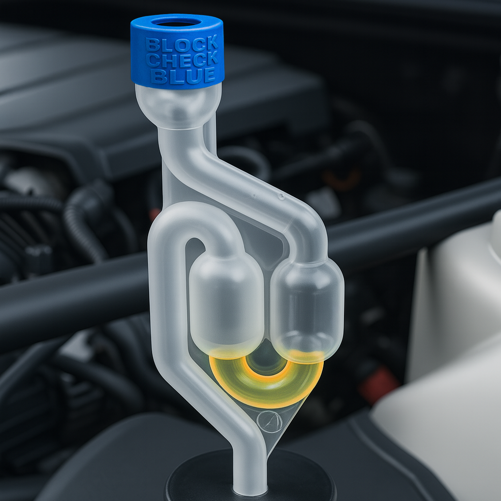

How to Test a Head Gasket at Home – DIY Combustion Leak Test Guide
Suspect you have a blown head gasket but dread an expensive trip to the garage? Good news: you can often confirm (or rule out) a head gasket leak right in your driveway. With a simple tool called a combustion leak tester, even a DIY car owner can test for a blown head gasket at home. In this step-by-step guide, we’ll show you how to use a head gasket tester kit – like the LeakLogic Block-Check Blue™ – to diagnose your engine. We’ll cover why this test is useful, what you need, and exactly how to do it safely. This quick test can save you time, money, and guesswork by providing a clear yes/no answer.
What You’ll Need for a DIY Head Gasket Test
- Combustion Leak Tester Kit: This includes a testing chamber and the special chemical fluid. The LeakLogic kit comes with a twin-chamber airlock tester, a tapered bung that fits most radiators, and a bottle of our Block-Check Blue universal test fluid.
- Personal Protective Gear: A pair of gloves and eye protection are essential. You'll be working around a running engine and hot coolant.
- Engine Coolant (if needed): Make sure your coolant level is high enough to test but not filled to the very brim. If it's too low, top it up with the correct coolant for your car.
- A Cool Engine: You must start the test when the engine is cool to the touch. Never open a hot cooling system.
- Well-Ventilated Area: Perform the test outside or in a garage with the main door wide open.
Step-by-Step Guide: Using a Combustion Leak Tester
Testing for a blown head gasket involves drawing air from the cooling system through the special chemical fluid and watching for a colour change. Follow these steps:
- Start with a Cold Engine: This is a critical safety step. Ensure the car is cool. Wear your gloves and safety glasses.
- Remove the Radiator or Expansion Tank Cap: Slowly twist off the cap. If you hear hissing, pause to let the pressure vent before fully removing it. The coolant level should be a few inches below the neck; if it's full to the top, siphon a little out so it doesn't get sucked into the tester.
- Add Test Fluid & Insert the Tester: Pour the blue Block-Check Blue™ fluid into the tester's lower chamber up to the marked fill line. Then, fit the tapered silicone bung securely into the radiator or expansion tank opening. The seal needs to be snug. 
- Start the Engine: Now, start the car’s engine and let it idle to warm up. As the engine runs, pressure will build in the cooling system. Keep an eye on the temperature gauge.
- Observe the Tester for Bubbling: This is the key step. Unlike kits that require a hand pump, the LeakLogic tester uses the engine's own pressure. As the system warms up, any combustion gases trapped in the coolant will be forced up into the testing chamber and will naturally bubble through the blue fluid. You don't need to pump anything – just watch the fluid carefully for 1-2 minutes.
- Watch for Colour Change: As gases bubble through the fluid, observe the colour. In a healthy engine, the fluid will remain blue. If combustion gases (which contain CO₂) are present, the fluid will change from blue to green, and then to a definitive yellow. Any distinct change toward green or yellow confirms a leak.
- Turn Off the Engine: Once you have your result (or after 2-3 minutes with no change), shut off the engine.
- Clean Up: Carefully remove the tester, avoiding spills. Let the engine cool completely before refitting the radiator cap. Rinse the tester with water for next time.
Interpreting the Results
Fluid Stays Blue:
This is a negative result and good news. It means no combustion gases were detected, and your head gasket is likely intact. Your symptoms are probably caused by another issue (like a thermostat or water pump).
Fluid Turns Green/Yellow:
This is a positive result. It confirms that exhaust gases are leaking into your cooling system. This is a definitive sign of a blown head gasket or a related issue like a cracked cylinder head. The faster it changes colour, the more severe the leak generally is.
What to Do After Testing
You performed the test – great! Now you can use that information to act:
- If the result was NEGATIVE (blue fluid): You can confidently rule out a head gasket leak as the cause of your problems and focus on diagnosing other parts of the cooling system.
- If the result was POSITIVE (yellow fluid): You now have proof of the problem. Avoid driving the car to prevent further damage. You can now make an informed decision about repair options, whether it’s a full gasket replacement or considering other solutions for an older vehicle. When you speak to a mechanic, you can tell them with confidence that you've confirmed a combustion leak.
Get Your Definitive Answer
Testing for a blown head gasket at home is both feasible and wise. It’s a simple DIY task that can confirm your worst fears – or relieve them – without immediately spending hundreds at a garage. It's the first and most important step in any head gasket diagnosis.
Get the LeakLogic Test Kit →